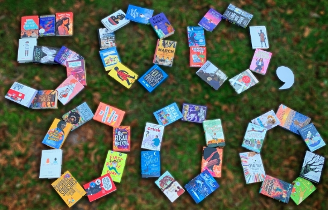
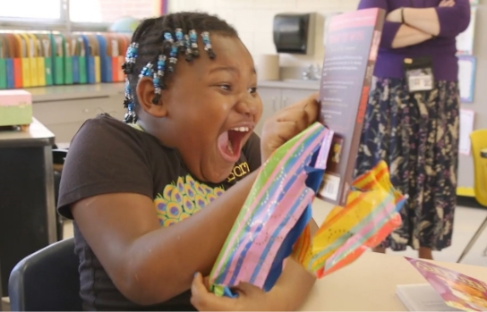
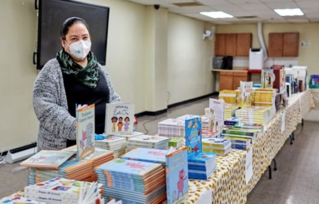
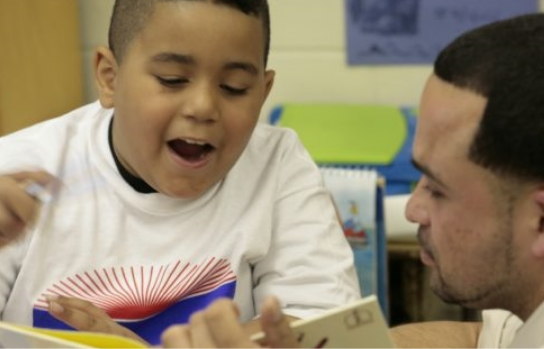
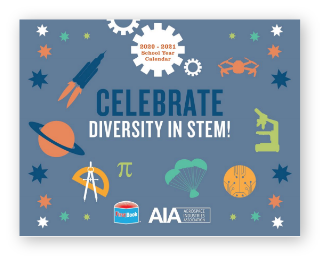
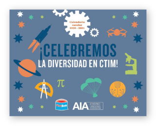

Stories of Innovation
and Resilience
FIRST BOOK 2020 IMPACT REPORT
From Our CEO
Kyle Zimmer
President, CEO, Co-Founder
Together, we will ensure that the needs of millions of children
growing up in poverty are not an afterthought, but a significant
force for educational equity.
Impact at a Glance
At First Book, we are building a path out of poverty through
educational equity. Our purpose is as bold as it is urgent: To
create systemic change. To ensure equal access to quality
education. To empower every educator and
all the children in need whom they serve.

000000+
registered members, with
00000+
new members in 2020
0 million
children served in 2020


000 million
books and resources distributed to date
000+ million
books and resources distributed through the First Book
Marketplace

Our Nationwide COVID-19 Response
When schools closed to slow the spread of the virus, millions of
children were essentially locked out of their education without
access to remote learning.
But for every student in need, First Book, its network of
educators, and amazing partners have been working day and night
to support, provide resources, and ensure that no child falls
behind.

COVID-19 Response Survey

Activation Network Map

Creating Learning
Connections Initiative

COVID-19 Response Snapshot
These students find themselves at a learning disadvantage. We
surveyed families, discovering many have only cellphones as
their sole access to the internet; no computers, no internet at
home, and when available, they have multiple siblings and adults
competing for these devices.
Educator from Klamath Falls City Schools,
Klamath Falls, OR
First Book’s innovative collaborations brought technology tools
and resources to more than 46 school districts in 17 states
across the country.
Tools to Engage Children in Age-appropriate Conversations About Race
2020 was painfully punctuated by a dramatic increase in racist
discourse and violence that impacted our communities. Racial
equity and diversity have always been core to our mission at
First Book, and with our long-term partner Pizza Hut, our
Diversity & Inclusion Needs Assessment asked educators about the
issue and what resources, if any, they needed.
00%
of respondents would like to engage their students in
conversations about race.
00%
of respondents said their school or organization does
not provide training resources on the topic of race and
racism.
00%
of respondents are white; 70% of their students are
Latinx and Black.
Empowering Educators Series
In response to these findings, First Book and Pizza Hut launched
Empowering Educators, an unprecedented set of free resources designed to help
educators engage their students in effective, courageous
conversations about race and social justice.
AIA Diversity in STEM Calendar
With the Aerospace Industries Association, we launched the
online Diversity in STEM Calendar (in English and Spanish) to
celebrate culture, diversity, and inclusion. It highlights
game-changing contributions of women and people of color in the
fields of medicine, space exploration, AI, and more; and
includes religious and cultural observances and notable dates of
significance in STEM fields.


I don’t know what I would do without First Book resources. As an
educator who has been focused on practicing racial equity and
anti-racist education for 25 years, having inclusive, relevant,
and current reading materials for myself and my students is
essential… The teacher toolkits on Bias, Diversity and
Inclusion, Race and Racism, Trauma, Empowerment, and Grief have
supported me, my students, my mentees, and my peers to bring our
practices to the level necessary to meet the needs of our
students and beyond.
Elementary school teacher, Saint Paul, MN
New Research and Models to Advance Educational Equity
First Book is regularly piloting new models and approaches using
research and continuous feedback from educators on the ground.
OMG Books Awards: Offering More Great Books to Spark Innovation
OMG Books Awards delivered more than 1.5 million books and
eBooks to children in need across 33 states, with an estimated
retail value of more than $12 million. The transformative
grantmaking program provided the basis for a new First Book
grants model, enabling First Book to maximize and target partner
funding with educators’ input to drive better educational and
life outcomes for children and families. This new turnkey First
Book grants model served as the basis for First Book's Creating
Learning Connections initiative to address the digital divide.
0%
of educators said the program increased students’
engagement in reading
0%
of educators said the program helped children realize they
are learners
0%
growth in the First Book Network, increasing sustainable
impact


Games & Learning: Creating Digital Learning Solutions
With COVID-19 turning homes into classrooms, First Book
partnered with
Games and Learning
(G&L) to make digital learning accessible to children in need.
The result is a comprehensive resource of e-books and games on
the
First Book Marketplace
that helps educators make the learning experience fun and
engaging.
000000
student users
00000
classroom access codes distributed
0000
educators received access codes
FAO Research: Supporting Children Experiencing Trauma
With the Foundation for Appalachian Ohio (FAO), First Book
Research & Insights surveyed educators and care providers in the
32-county region to better understand the support needed to help
children experiencing trauma. The study, “Educational Barriers
and Solutions,” highlighted three interventions with the highest
level of support for students:
- Downloadable and printable resources such as toolkits, handbooks, or guides with concrete action steps to help students struggling with these educational barriers
- Family engagement or home visitation training for educators wanting additional strategies for building critical relationships with students’ families
- Virtual visits from local and national professionals such as behavioral and mental health experts on relevant topics to strengthen classroom strategies
KPMG: Thought Partnership with First Book
KPMG and KPMG’s Family for Literacy (KFFL) continued their
long-standing support and thought partnership with First Book.
In 2020, KPMG and KFFL hosted the Co-Authoring Impact Summit,
and championed First Book’s plans for piloting new financing
approaches to address the increased needs for educational
resources. They also launched the Connect for a Great Start
campaign to donate books from First Book’s Stories for All
Project™ to promote understanding and empathy through stories
that help children see and celebrate their similarities and
differences.
Looking Forward to 2021
There are enormous challenges ahead in 2021. COVID-19 will have
lasting effects, with more families in distress, and previously
strapped school budgets further endangered by state and local
budget deficits.
With COVID-19 having lasting effects on the communities we serve, First Book is poised to catapulting our impact and addressing dramatic educational challenges through:
With COVID-19 having lasting effects on the communities we serve, First Book is poised to catapulting our impact and addressing dramatic educational challenges through:
Expanded Funding Mechanisms: First Book will launch a $15
million investment fund to catapult its impact to the next level
— with a goal of reaching 20 million children annually — and
ensure the organization’s sustainability.
Diversity, Equity, and Inclusion: First Book will expand
resources and develop programs that empower educators to engage
students in conversations on race and racism, and launch new
programs encouraging children of color to be change-makers.
Network Growth: First Book will deepen outreach to Title
I schools, early childhood caregivers, educators in rural areas,
and child advocates working with communities of color – ensuring
that the children they serve are at the forefront of new product
and resource creation.
Expansion of Educator-Driven Resources: First Book will
continue to address the needs related to distance learning and
COVID-19, including device and internet connectivity, mental
health support, and sharing of best practices between formal and
informal educators serving children in need.

Taking Action
Delivering on our nation’s promise of a more perfect union
fundamentally requires equal access to quality education.
With First Book’s nearly 30 years of experience in creating
systemic, educator-driven models, and with the support of our
corporate, academic, and social sector partners, we can develop and
scale innovative approaches that respond to the collective voice of
educators serving our most vulnerable children. Together, we will
break down the barriers that stand in the way of educational equity
and help millions more children realize their potential.